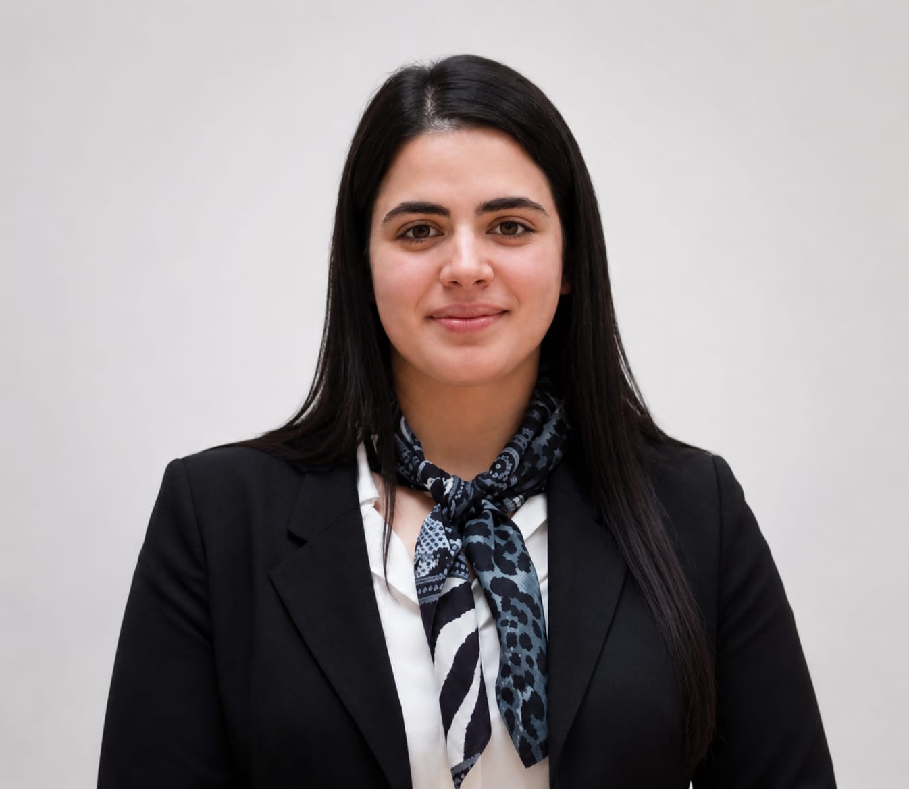

À propos
KHENNACHE Celina-Fathma
Ingénieure en formation en Automatique, Robotique, Mécatronique et Intelligence artificielle
Depuis toujours, j’ai été guidée par une chose : la curiosité.
Petite, je ne me contentais jamais de regarder le monde… je voulais le comprendre.
Pourquoi ça fonctionne ? Comment c’est construit ? Peut-on l’améliorer ?
Chaque question en amenait une autre. Chaque réponse ouvrait une nouvelle porte.
Avec le temps, cette curiosité est devenue une passion. Puis une méthode.
Puis une manière de penser.
Aujourd’hui, elle est au cœur de ce que je fais : l’ingénierie.
Concevoir, analyser, optimiser… mais surtout transformer des idées en solutions concrètes.
Ce site est une porte d’entrée dans mon univers — un aperçu de ce que je crée,
de ce que j’imagine, et de ce que je peux construire.
Et ce n’est que le début...
Portée par cette curiosité, je recherche un stage de fin d’études de 6 mois, à partir de février 2027, au sein d’une équipe dynamique, afin de développer mes compétences et de contribuer à la création de solutions innovantes.
